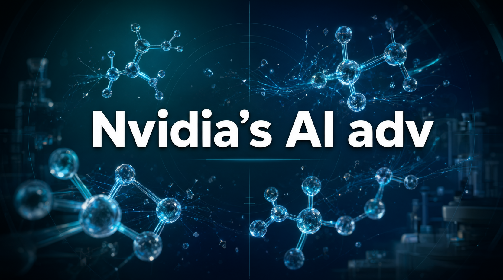

最新財報釋出後，市場重新發現這家晶片巨頭的護城河已不只於 GPU。當 AI 運算邁向千兆瓦等級，真正決定勝負的，是橫跨 CPU、記憶體與流量調度的系統級協調能力。

隨著 Nvidia 最新財報公布，投資者開始重新審視這家晶片巨頭的競爭力來源。數據顯示，當 AI 運算需求邁向千兆瓦（gigawatt）等級，單一資料中心內部的協調複雜度正以倍數成長。業界觀察指出，Nvidia 的優勢已悄悄從 GPU 晶片本身，延伸至環繞其外的整套硬體生態。
儘管市場不乏運算資源走向商品化的討論，但要讓超大規模資料中心長期維持峰值效率，仍是極高難度的工程挑戰。隨著部署規模擴大、傳輸速度提升，這項挑戰只有增無減。換言之，即便 GPU 本身面臨激烈競爭，Nvidia 在網路、儲存與資料調度等周邊系統環節，依然保有巨大的領先幅度。
本次報告揭示，Nvidia 對資料中心效率瓶頸的解法，並非持續堆高處理器效能，而是透過更智能的流量控制來提升整體利用率。這套策略的核心，是肩負資料協調任務的全新 Vera CPU，它被設計用來處理大規模運算中最棘手的調度難題。
Nvidia 儲存技術副總裁 Jason Hardy 說明，任何單一伺服器或運算平台的記憶體容量都存在上限。當資料中心的運算能力持續攀升，記憶體容量雖可隨之擴展，但將資料在正確時機送達正確位置的難度也同步提高。能否讓資料準時抵達 GPU，已成為決定實際產出效率的關鍵。
「Vera 的重要性在於，單一伺服器或任何運算平台的記憶體容量都有上限。」
── Jason Hardy｜Nvidia 儲存技術副總裁當企業不斷追求更低的「每瓦 tokens 數」這一成本效益指標時，才真正意識到流量路由（traffic direction）對整體表現有多關鍵。這股趨勢將基礎設施競爭推向全新維度：能否打造一款可抗衡的 GPU 已不再是決定性問題，能否讓整個系統高效協作，才是勝負的分水嶺。
至少在這一新戰場的早期階段，Nvidia 看來已握有壓倒性優勢。專家分析，這種優勢並非僅來自 GPU 晶片，而是源自圍繞 GPU 所建構的系統級基礎設施，涵蓋互連架構、儲存調度與整體資源配置等多年累積的工程實力。
本次報告最重要的啟示在於：市場原先將 AI 晶片之爭視為 GPU 效能的單點競賽，而 Nvidia 已悄然把戰場提升至「系統級協調」層面。競爭對手或許能在晶片規格上追趕，但系統調度端的部署經驗與生態整合難以短期複製，這正是市場應重新評估其長期競爭力來源的原因。
總結而言，此次戰場轉移意味著 Nvidia 的護城河比市場原先想像的更深。即使競爭對手能在 GPU 性能上逐步貼近，要在系統協調層面追上 Nvidia，仍需投入相當長的時間。那些在長期部署實務中累積的調校經驗，尤其難以在短期內複製。
不過，這場新維度的競爭也已吸引晶片廠商與 AWS、Microsoft 等超大規模雲端服務商積極投入，未來版圖仍存在變數。業界觀察建議，後續可聚焦以下幾項關鍵發展：